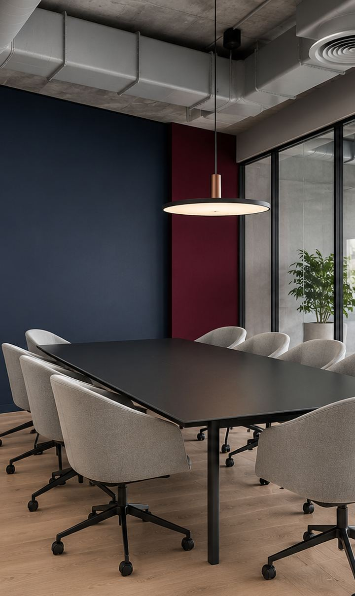

Workplace investigations that hold up to scrutiny.
Impartial third-party investigations, investigator training and AI-enhanced support that give your organization fair, thorough and defensible results.
Schedule a ConversationINVEXTRA Investigation expertise, amplified.
Join the INVEXTRA Waitlist (opens in a new tab)Our services
Most firms can give you compliance. Most firms can give you empathy. Almost none can integrate the two. We deliver investigations, training and AI solutions that drive both legal defensibility and organizational impact.
-
Investigations
Impartial, protected-class competent, legally defensible and operationally grounded. Built for clarity, credibility and next-step decision-making.
-
Training & Capacity Building
Not generic. Not theoretical. We train your team in the exact skills real investigators need, customized to your cases, culture and complexity.
-
AI Solutions
AI tools built by actual investigators, not tech vendors guessing at workflows. Enhances consistency, clarity and rigor without replacing human judgment.
Our investigation process
Every investigation follows the CLEAR By-the-Book™ framework. It is the same structure we use in our own investigations, teach to internal teams and build into our AI tools.
Schedule a Conversation-
Capture the Complaint
Build a clear starting point that anchors, not limits, the scope. We gather timelines, witnesses, documents, potential policy issues, risk indicators and context, and expand scope only when the evidence requires it.
-
Launch the Strategy
Stabilize quickly. Plan deliberately. Within about 72 hours we support safety and retaliation assessments, supportive measures, evidence preservation and initial outreach, then build a defensible plan for the investigation.
-
Evaluate the Evidence
Gather the available body of evidence: testimonial, digital, documentary, physical. We use trauma-informed interviewing, disciplined documentation and structured evidence matrices tied to policy elements.
-
Analyze Impartially
Evaluate evidence objectively. Apply the correct standards. Assess credibility transparently. Reject unsupported conclusions.
-
Report with Clarity
Plain-language findings, necessary qualifiers only, and a clear explanation of conduct and policy. We don't drop a report and disappear: we can guide you through what the findings mean for your organization.
By-the-Book investigates like we have to live with the outcome.
We are a team of dedicated professionals who combine deep legal expertise with a compassionate, trauma-informed approach. We not only uncover the facts but also help your organization heal and grow.
Precision in Process
Civil-rights-level rigor. Real evidentiary discipline. Protected-class competency. Our investigations, trainings and AI are built to withstand regulatory, judicial and external scrutiny.
Integrity in Practice
Investigations don't unfold in a vacuum. They unfold amid politics, culture, constraints, power dynamics and competing priorities, so we build solutions that work in the environment you actually operate in.
Actionable Outcomes
Insight is only useful if it drives action. We answer three questions: what happened, what it means and what needs to happen next.
The By-the-Book Effect
When you work with us, you stop firefighting and start preventing fires.
-
Marquita applies a methodical approach to investigations, consistently achieving clear and compliant outcomes. Her unique blend of empathy, strategic insight, and technical expertise makes her an outstanding coach for investigators at all levels.
Dr. Jennifer Maedgen Associate Vice President & ADA Officer The University of Texas at Austin -
Marquita is a highly skilled investigator with a keen eye for detail and a dedication to fairness. Her systematic approach to investigations ensures clear, compliant results. Her ability to build rapport with witnesses and create a safe and inclusive environment sets her apart. Marquita's investigative prowess is unparalleled. Her ability to quickly identify key issues, gather relevant evidence, and deliver impactful results is truly impressive.
Gilbert Chrispin, SPHR Assistant Director of Employee Relations Nova Southeastern University -
Marquita brings a systematic approach to investigations that delivers clear findings even in the most challenging investigations. Her methodology for analyzing credibility allows her to consistently come to sound conclusions. This makes her an excellent coach for investigators at any level.
Kory Levingston District Title IX Compliance Officer Tarrant County College
Who we work with
- Corporate HR & Legal
- DEI & Title IX
- Non-Profits & NGOs
- Government Agencies
- Higher Ed & K-12
- Healthcare
- Compliance & Ethics
Ready to stop putting out fires and start preventing them?
Let's look at your investigative system: what's working, what isn't, and where your risks really are.
In 30 minutes, you'll get a clear picture of:
- The gaps in your current process
- Your highest-priority risks
- A roadmap for how we can support you